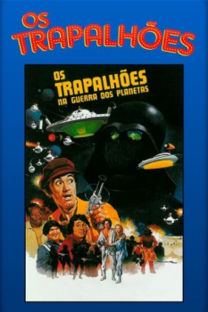

Os Trapalhões na Guerra dos Planetas (1978)


Avaliação (TMDb):


4.8/10 (26 votos)
Avaliação (Usuário):
País:Brazil, 98 minutos
Idiomas falados:Português
Gênero(s):Aventura, Comédia, Família, Sci-Fi
Diretor(s):Adriano Stuart
Codec:MPEG-2 (DVD)
Número: 4337
Sinopse:
Vindo do espaço, o príncipe Flick, pede ajuda dos Trapalhões, para libertar o planeta onde vive do domínio do malvado Zuco. Oferece uma recompensa aceita pelos quatro amigos, que embarcam em uma nave espacial, pilotada por um monstro peludo chamado Bonzo.
Elenco:
Renato Aragão, Mussum, Dedé Santana, Zacarias, Pedro Aguinaga, Wilma Dias, Carlos Kurt, Maria Cristina Nunes, Emil Rached
Tipo de mídia: DVD5,
Legendas: Inglês, Espanhol, Português,
Alugado: Não
Tela: Anamorphic Widescreen